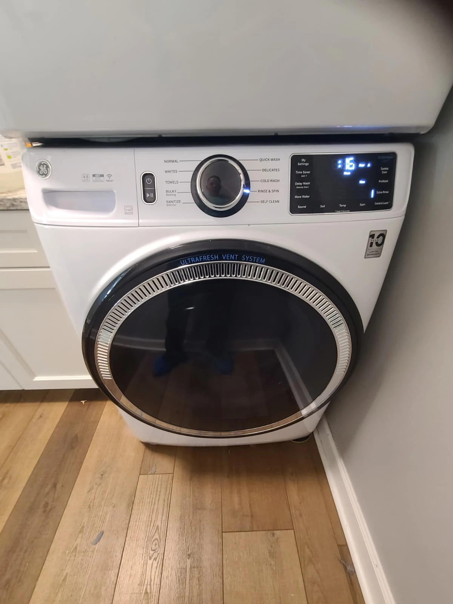
A Door-Lock Error That Led to a Different Diagnosis
A homeowner in Carmel, Indiana, called Alex Appliance Repair after their GE washing machine displayed an error associated with the door lock. The washer sat beneath a gas dryer in a stacked installation, making access part of the repair work.
A more detailed diagnosis traced the problem to the washer control board. The repair therefore focused on replacing that board rather than treating the reported error as proof that the door lock itself needed replacement.
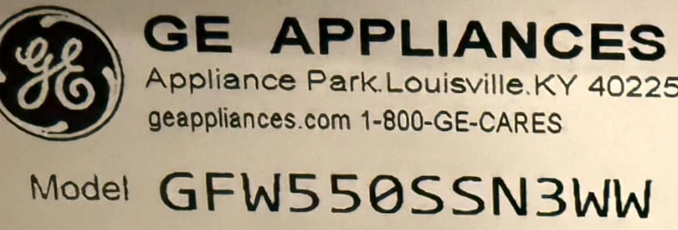
Model Identification: GE GFW550SSN3WW
The appliance label identifies this front-load washer as GE GFW550SSN3WW. The model detail shown here comes from the original service photograph.
After the control-board fault was identified, a replacement board was ordered for the repair. The cabinet diagram in the visit overview highlights the board location, while the photographs below document the actual work.
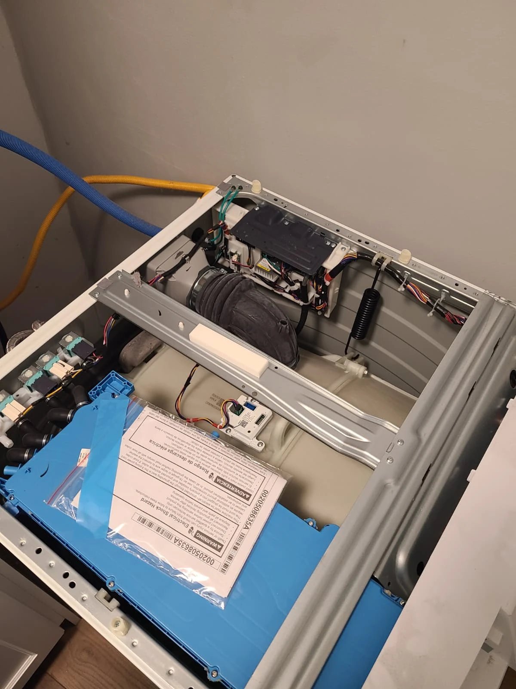
Removing the Stacked Gas Dryer for Access
Before taking the dryer down, its gas supply was shut off and the gas connection, electrical connection and exhaust vent were disconnected. The gas dryer was then removed from above the washer so the washing machine could be opened.
With the washer top removed, the technician could reach the control-board assembly. This was a washer electronics repair, but completing it also required handling the stacked dryer and restoring its connections afterward.
Accessing the Washer Control Board
The opened washer exposed the control-board housing and its wiring connections. These photographs show the housing and the original board during the service.
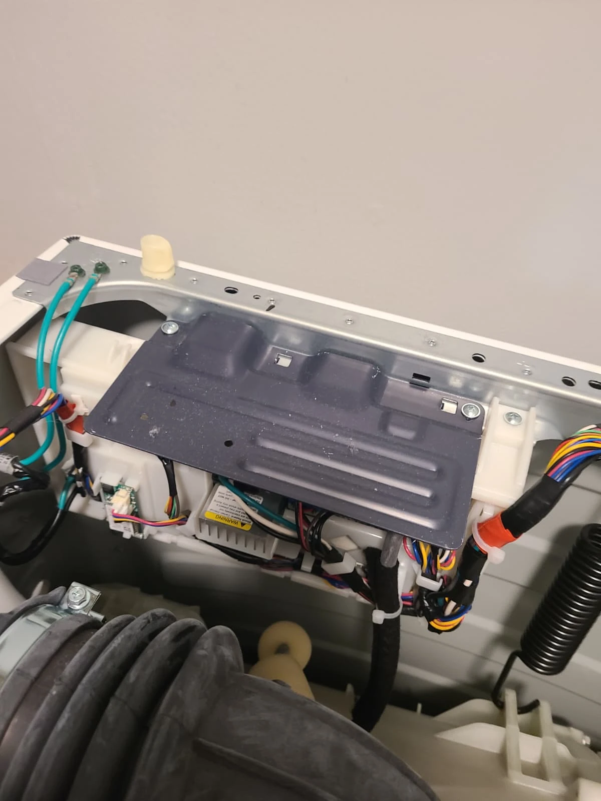
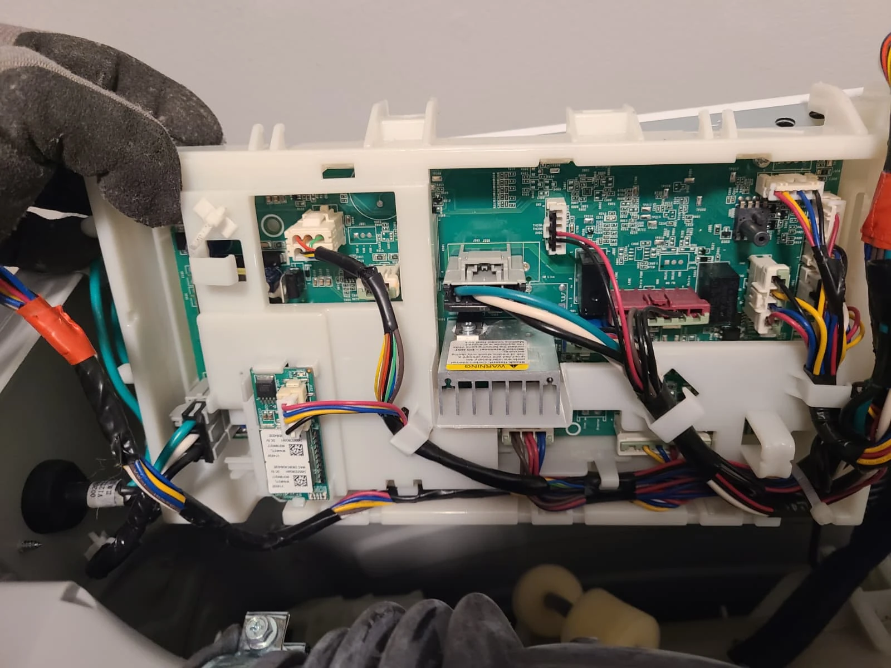
The important distinction in this case was between the reported symptom and the diagnosed component: the customer saw a door-lock-related error, while the technician identified a control-board fault. That diagnosis determined which part was ordered and replaced.
Replacing the Faulty Control Board
Once the ordered replacement was available, the faulty control board was removed and the new board installed. The side-by-side photograph shows the removed board in its housing and the replacement ready for installation.
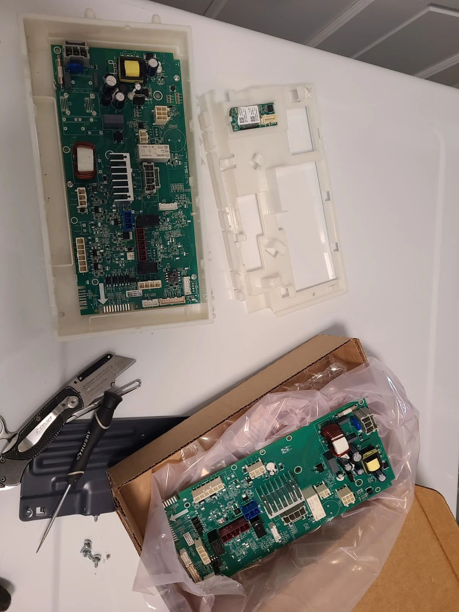
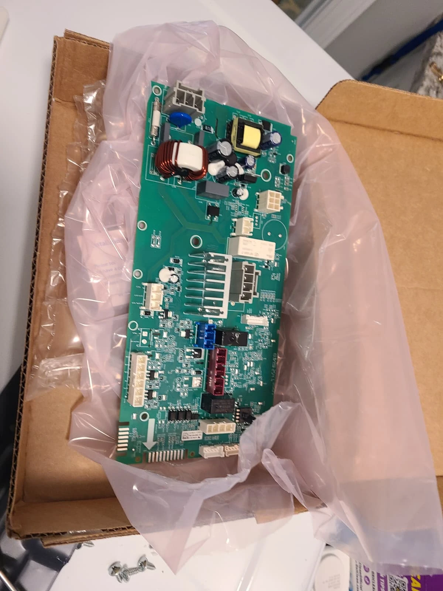
The new board was fitted and its connections restored. The work documented here was a board replacement, not a component-level repair of the original circuit board.
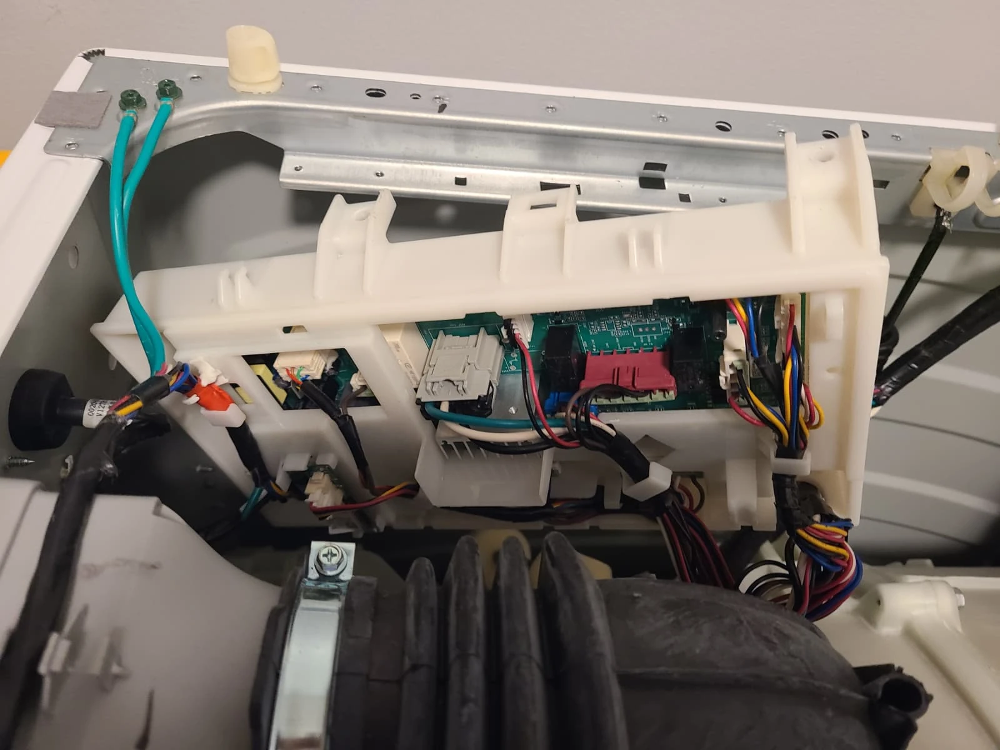
Initializing the New Control Board
Installing the replacement was not the final step. The new control board required initialization on this washer. The technician completed that setup, after which the washing machine began working properly.
For this repair, replacing the hardware and completing the setup were both necessary before the washer could be returned to service. Once initialization was complete, the work continued with reassembly and final testing.
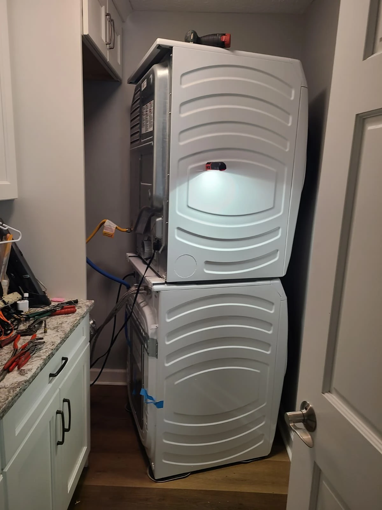
Putting the Laundry Pair Back Together
After the board replacement and initialization, the washer was closed up and the gas dryer returned to its position above it. The equipment was reassembled in the reverse order of removal.
The dryer gas, electrical and exhaust connections were restored as part of returning the stacked pair to service. The photograph shows the installation during that process, before all rear connections were complete.
Restoring the Dryer Connections
The service photographs document the rear connection work, including checking solution applied at the gas fitting and the exhaust vent reconnected to the dryer. These are two stages of the reassembly process.
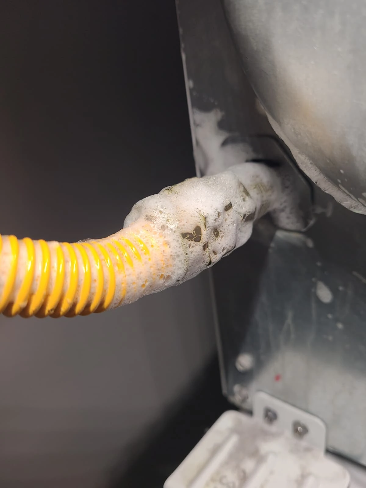
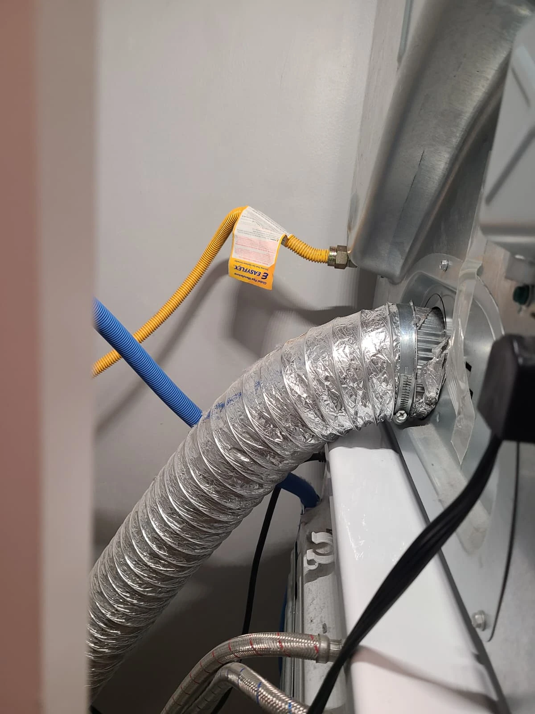
Work on a stacked gas appliance involves more than opening the washer cabinet. Gas disconnection, reconnection and handling the upper appliance are work for qualified service personnel; this article is a record of a professional repair, not a do-it-yourself procedure.
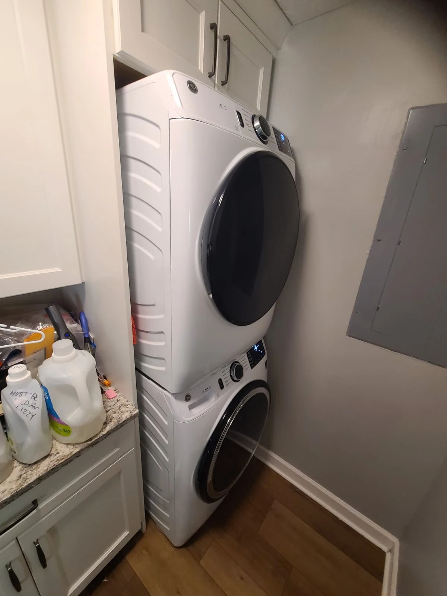
Final Testing: Washer Operation Restored
After everything was reassembled, the installation was checked and the washer tested. Following control-board replacement and initialization, the washer operated properly and the service was completed successfully.
The completed job included diagnosis of the control-board fault, ordering and replacing the board, initialization, removal and reinstallation of the stacked gas dryer, reconnection and final testing.
Questions About This GE Washer Repair
Was the door lock the failed part?
The reported error concerned the door lock, but the detailed diagnosis identified the control board as the problem. The documented repair was control-board replacement and initialization.
Why was the gas dryer removed?
It was stacked above the washer and needed to be taken down to provide access for this repair. Its gas, power and vent connections were disconnected and restored during the work.
Did the new board need initialization?
Yes. The technician initialized the replacement board on this GFW550SSN3WW, and the washer began operating properly afterward.
Does a door-lock error always mean a bad control board?
No conclusion about another washer should be drawn from this case alone. The repair decision here followed a detailed diagnosis, not the error description by itself.
GE Washer Repair in Carmel, Indiana
If your GE washer displays an error or will not operate correctly, contact Alex Appliance Repair for washer repair in Carmel. Share the full model number and the error as displayed, and mention whether a gas or electric dryer is stacked above the washer.
Explore our washer repair services, Carmel service coverage and more repair stories with original service photographs.
Alex Appliance Repair is an independent appliance repair service operated by Aksenov LLC. Call (463) 248-8429 to discuss your appliance.
Book washer repair in Carmel